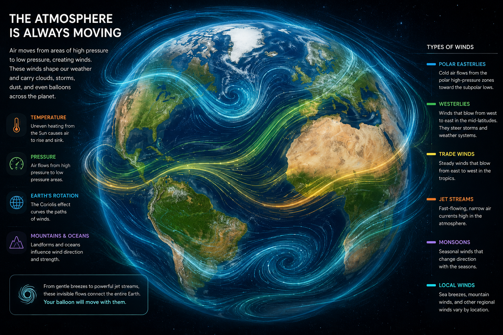
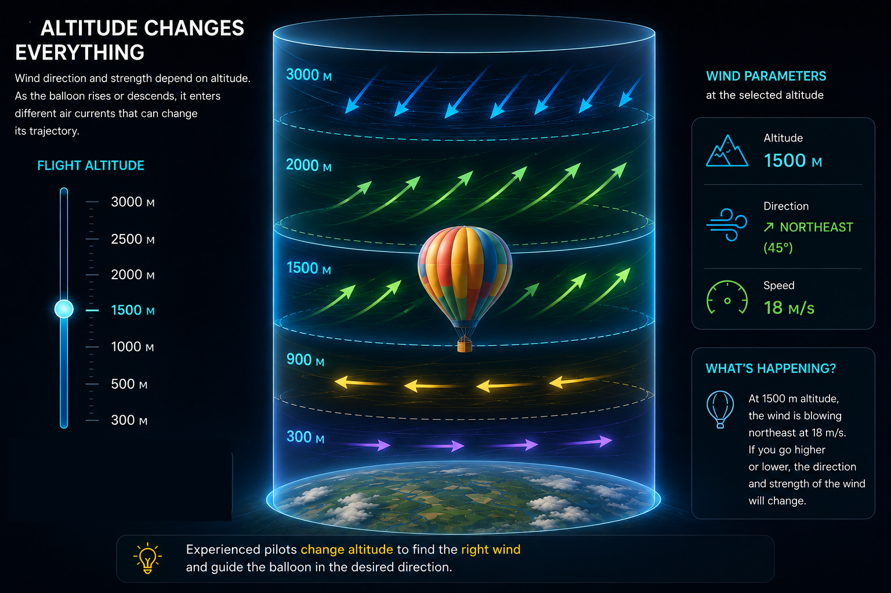

Unlike an airplane or drone, a hot air balloon has no engine or steering wheel. The pilot cannot simply decide to fly north or south. The balloon moves with the surrounding air.

Aerost.art uses weather forecast data to estimate how the atmosphere moves over time.

Forecast models help estimate possible trajectories, but the atmosphere always introduces corrections.
Because the atmosphere is chaotic:
That's why every flight is unique, and finding the right air current becomes part of the art of ballooning.
Sometimes — yes.
Although the balloon has no rudder or engine, the pilot can partially influence the route by changing altitude.
At different altitudes, the wind often blows in different directions. By ascending or descending, the balloon can catch a different air current that changes its trajectory.
It is impossible to fully control the direction of flight. If the wind at all available altitudes moves in the same direction, the balloon will follow it.
That's exactly why every flight is unique, and finding the right air current becomes part of the art of ballooning.
Explore how wind at different altitudes changes the route.